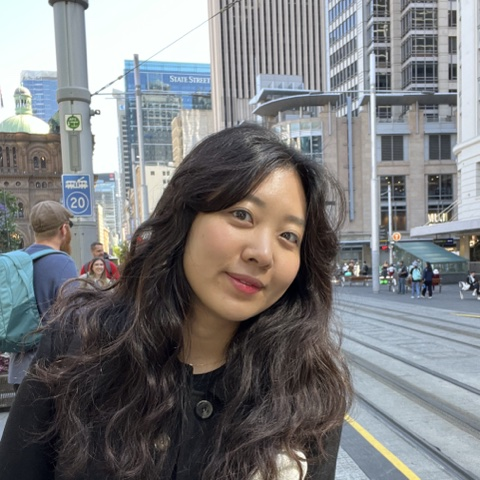

Overview
Contemporary AI systems increasingly share a recognizable set of interactional defaults. They are fast, helpful, knowledgeable, personalized, and consistent, they remember everything, and they align with what the user asks for.
These defaults make AI easier to use, yet they also narrow how human–AI interaction is imagined and studied. AI Otherwise asks what we can learn by deliberately designing AI that departs from these defaults, such as AI that forgets, responds slowly, misunderstands, refuses to optimize, adopts unfamiliar social roles, or breaks its intended alignment, and by treating such systems as interactional probes rather than failures.
Building on slow technology, counterfunctional and critical design, and recent work on reflective, frictional, and provocative AI, the workshop brings together researchers, designers, artists, and practitioners who build or study AI that behaves otherwise. Participants will experience one another’s artifacts first-hand, map the reactions they provoke, surface the assumptions they make visible, and translate these into concrete research questions and follow-up probes.
The point is not to make AI bad, but to use difference as a method.
Each alternative AI can be seen as an ablation-like design probe: by removing or inverting a familiar capability, it makes the role of that capability more noticeable. A single probe can open a focused question, such as how limited memory changes disclosure; a collection of probes lets us compare how people adapt to, resist, or value different defaults.
Workshop goals
- Collect alternative AI designs. Bring together working systems, demos, and concepts that deliberately change a familiar AI behavior, such as memory, response speed, relevance, or compliance, and state clearly which default each one changes.
- Observe how people respond. Let participants try these systems first-hand and document how people adapt to, resist, or come to value AI that behaves differently from what they expect.
- Identify open research questions. Turn these observations into concrete research questions and design directions for human–AI interaction, shared after the workshop through an online gallery of the presented systems and a workshop summary.
Themes
We invite contributions that challenge assumptions about what AI is expected to be, do, or become. Four themes organize the call. They are not submission categories, and we welcome work that inverts an assumption not listed.
Inverting interactional defaults
AI that is intentionally slow, forgetful, inconsistent, non-personalized, uncertain, or non-optimizing, so that its limitations become material rather than problems to eliminate. What do people do when a familiar capability is missing, and what does its absence reveal about how people rely on, interpret, or value that capability?
Breaking role and alignment
AI that resists, reinterprets, disagrees with, or departs from the goals it was designed to follow. When the alignment we treat as essential is removed, does the AI lose its meaning, and under what consent and framing can misalignment be more meaningful than alignment?
Alternative relationships and social roles
AI that occupies unfamiliar roles, such as an apprentice that asks the user for explanation or guidance, and offers unfamiliar distributions of expertise, dependence, care, or responsibility. How do such roles reshape what a relationship with AI can be?
Crafting and studying AI otherwise
Methods for reliably making models behave otherwise, whether through prompting, fine-tuning, or interface constraints, and for studying encounters with such systems responsibly, including empirical, theoretical, and methodological work on how people respond when AI does not behave as expected.
Seed probes
Three example artifacts and the research questions they open. Each inverts one default of contemporary AI. These are only a starting point; we expect participants to bring many more.
Call for Participation
What if AI were different? Today’s AI systems share a set of defaults: fast, helpful, ever-remembering, and aligned with what we ask. AI Otherwise is a CHI 2027 workshop (Pittsburgh, PA, USA, 10–14 May 2027) exploring what we can learn by deliberately designing AI that departs from these defaults, such as AI that forgets, responds slowly, misunderstands, refuses to optimize, or deliberately disagrees with its users. We treat such systems as probes that make taken-for-granted assumptions in human–AI interaction more visible.
We invite researchers, designers, artists, technologists, and practitioners, whether they build AI that behaves otherwise or study what happens when it does. Early-stage, playful, artistic, and unconventional work is especially welcome.
Contribution formats
So that the submission process is not more conventional than the workshop itself, we accept two formats:
Artifact / Demo
2–4 pages + optional video or linkA working or partially working AI system that participants can experience, submitted with a description of what default it inverts and what has been observed.
Position / Reflection paper
2–4 pagesConceptual, critical, empirical, or methodological work on AI designed otherwise, including speculative concepts such as scenarios and design fictions.
Page counts refer to the ACM single-column format and exclude references. Submissions are not anonymized and are reviewed by the organizers and a small program committee.
Selection
Contributions are selected on relevance, on potential to stimulate discussion, and on clarity about which default is inverted and what it reveals. Polish and technical sophistication are explicitly not criteria. Selection aims for a diverse set of inverted defaults, disciplines, and perspectives. We aim for 20–25 participants; if demand exceeds capacity, we will prioritize experiential artifacts and diversity of inverted defaults, and invite remaining authors to contribute to the online gallery.
Submission details
- Format
- 2–4 pages in the ACM single-column format (ACM template; Overleaf), excluding references. Artifacts / demos may add an optional video or link.
- Review
- Not anonymized. Reviewed by the organizers and a small program committee for relevance, potential to stimulate discussion, and clarity about which default is inverted and what it reveals.
- Publication
- Non-archival. Accepted contributions are posted on this website with authors’ consent. Authors retain copyright, and website publication does not preclude later submission of extended work elsewhere.
- Attendance
- In person only. At least one author of each accepted contribution must register for CHI 2027 by the early registration deadline (March 4, 2027) and attend the workshop. Two weeks before the workshop, accepted contributions are shared among participants, and artifact / demo authors receive guidance on setting up their demo for the demo session.
- Submit
- Through the submission form (link TBA) by February 11, 2027, Anywhere on Earth.
Accessibility
We follow SIGCHI accessibility guidance, collect access needs at registration, and coordinate accommodations with the CHI accessibility chairs. Stations can be visited at different paces, responses can be typed, and artifacts will offer text-based or screen-reader-compatible alternatives where possible.
Important Dates
All deadlines are 23:59 AoE (Anywhere on Earth).
Schedule
The workshop runs as two consecutive 90-minute sessions: the first introduces the accepted work through short talks and live demos, and the second focuses on group discussion and research directions.
Tentative. Exact times will be posted once CHI assigns the slot. Slides and summary notes will be posted here after the workshop.
Accepted Papers
Accepted artifacts, demos, and position papers will be listed here after notifications go out on February 25, 2027.
Organizers
The organizing team combines expertise in human–AI interaction, interaction and speculative design, and AI/ML.
Siya Qi
Siya is a Ph.D. candidate in NLP and HCI at King’s College London. Her research focuses on LLM reliability and real-world applications of large language models.
- LLM hallucination
- LLM agents
- Theory of Mind
- Mechanistic interpretability
Lead organizer: overall program, participant selection, and the post-workshop synthesis.

Yoonseo Choi
Yoonseo is a Ph.D. candidate at KAIST, working with Prof. Juho Kim. She explores how user perspectives can be represented, interpreted, and integrated throughout the lifecycle of AI-mediated systems.
- Human–AI interaction
- Generative proxies
- Creator ecosystems
- Responsible AI
Technical setup of demos, the shared online gallery, and online materials.
[Organizer 3]
Leads the demo session and the facilitation of group discussions.
[Organizer 4]
Leads the closing discussion and the write-up of the workshop summary.
Contact
Questions?
For questions about submissions, the program, logistics, or access needs, please email the organizers.
Workshop participants must register for CHI 2027; see the CHI 2027 workshops page for conference-level details.